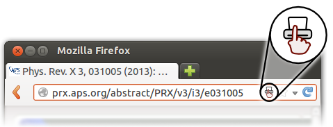

You're almost ready to use Dontprint. Follow these three simple steps to get started.
Dontprint detected your operating system as . (change operating system)
Select your operating system:
|
|
Please select the downloaded executable. (You can download k2pdfopt from willus.com.)
|
You are now ready to use Dontprint. Go ahead and try it out:
Dontprint will download the PDF file of the article, optimize the layout for a small screen, and send it to your e-reader.
